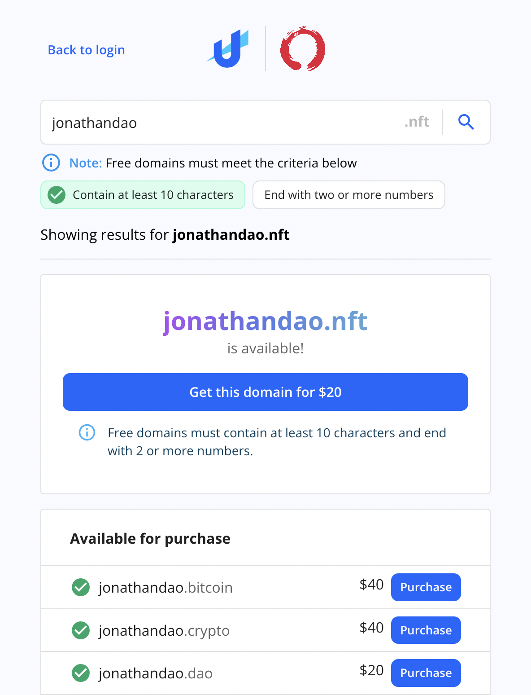

Featured Updates for Login With Unstoppable
Login with Unstoppable is in active development and we're working to add new features on a regular basis. This page will highlight some of the newest additions, including features added to domain profiles and the Unstoppable authentication service. Many of these features require little or no change to existing integrations.
Web3-React v8 (Beta) Support
With version 2.4.1-rc.0, the @uauth/web3-react library now uses the v8 (beta) branch of web3-react. This new version of web3-react makes hooks available for each individual connector. Global state management can be achieved by providing these hooks to the Web3ReactProvider or by using the individual connector hooks to listen for connection status changes.
Developers will need to install the v8.x.x-beta.0 versions of the web3-react core and connector packages to make use of this update. See the updated web3-react integration guide and the more advanced example app for more information.
Revenue Share for Login
Partners will now be able to generate additional revenue by offering paid domains within the integrated Login flow, and receiving revenue share payments immediately through Stripe after each purchase. Partners can view the revenue share percentage they will recieve on their Client Management Dashboard and see a more detailed view of the transactions through their Stripe dashboard.
For partners with existing integrations, offering Paid Domains via Login integration is a zero code update. See the instructions for requesting and configuring revenue share on the Payment page of the login client configuration.

Login with Verified Solana Wallet
Users who have added a verified Solana address to their ud.me profile now automatically see the option to sign with the Phantom wallet to confirm ownership of their domain and login.
Applications can confirm that a user authenticated with a Solana address using the getAuthorizationAccount() method of UAuth.
const authorization = await uauth.loginWithPopup(); const account = uauth.getAuthorizationAccount(authorization);
The VerifiedAddress returned for a Login session authorized by a Solana wallet would look something like this:
{
address: 'Ft2Z5NocHXD61jHzSkzk8qpVkMETDETitoyei6QQDXt4', // The verified solana address
message: 'Link Unstoppable Domain domain.tld with secondary wallet.\n \n {\n "domain": "domain.tld",\n "currency": "SOL",\n "wallet": "Ft2Z5NocHXD61jHzSkzk8qpVkMETDETitoyei6QQDXt4"\n}',
signature: '27D5QwhpVZCEFPxQBNCkTb8NKKL7gKEaRqCitiXTC1BF2n1Bdd3MReBGXaE2yi1Cz683hDchvEBuTXaHTVbc83q',
symbol: 'SOL',
}Login with Verified Profile Accounts
Login with Unstoppable now supports authentication with certain verified accounts on a user's domain profile. This doesn't require an specific change from login integrations to work, but two new methods have been added to UAuth to give applications access to some of this information:
| Method | Description |
|---|---|
| getVerifiedAccounts() | Returns a list of verified accounts associated with the domain. |
| getAuthorizationAccount() | Returns the specific verified account used to authenticate the domain. In the case of a standard UD login, this would return the wallet address that owns the domain. |